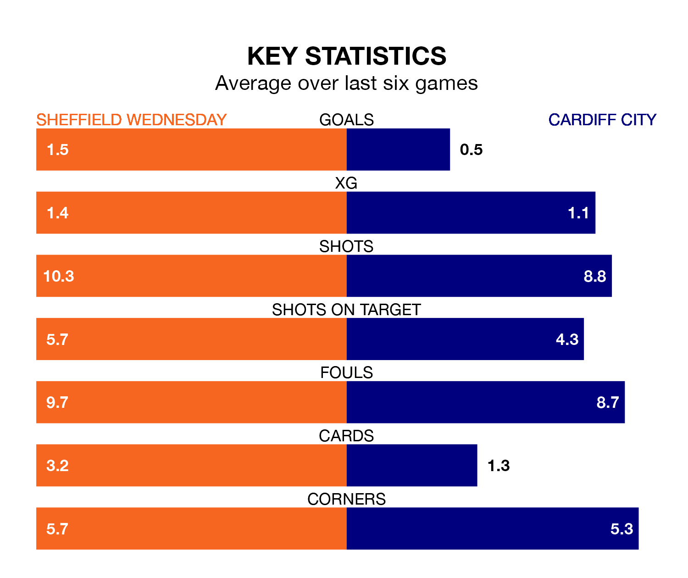

Struggling Sheffield Wednesday face Cardiff City at Hillsborough on Saturday looking to build on a win in their last league outing.
After securing all three points with a 2-1 victory over Queens Park Rangers on December 16, the Owls sit 23rd in the Championship.
They travel to play a Cardiff side 12th in the standings, who lost in their last match, 3-0 against Hull City.
In the last 10 years, Wednesday and Cardiff have played each other on 13 occasions. Wednesday won four of them, Cardiff three, and they drew six times.
On average, the Owls scored 1.5 goals and the Bluebirds 0.9 in those matches.
Their last meeting was on August 26, when Cardiff won 2-1 at home.
In Jak Alnwick, Cardiff can rely on one of the league's safest pair of hands. He has kept six clean sheets in his 16 appearances this season in the Championship.
In Wednesday's net, Cameron Dawson has three clean sheets in 13 games. He has conceded a goal every 62 minutes, 50% more often than the 90 minutes between goals for Alnwick.
With 16 goals in 22 games so far this season, the Owls are the league's lowest scorers with 0.7 goals per game. And they are conceding more than average, letting in 35 goals at a rate of 1.6 per game.
City are also below average scorers, with 1.3 goals per game, compared to a league average of 1.4. They have conceded 1.2 goals per game.
The home side are in mixed form in the Championship, with three wins and a draw from their last six games.
With two wins and four losses over that period, the Bluebirds' form is worse – they have taken six points from 18, compared to Wednesday's 10.
Updated: 15:16, 21/12/23